오른쪽에서 왼쪽으로, 국소적 미분을 곱해 가며
— 오차역전파
이 자료는 오차역전파 교안 한 권을 끝까지 담았습니다
"P2 23의 gradient()는 numerical_gradient와 거의 같은 기울기를 훨씬 빨리 구했습니다. 그 backward 코드의 y − t, z1.T, sigmoid_grad는 어디서 나왔을까?"
노드와 에지, 국소적 계산, 역전파로 미분 구하기(사과 값 2.2)
합성 함수의 미분 = 미분의 곱, 덧셈 노드·곱셈 노드의 규칙, 연습 풀이
ReLU 계층, 시그모이드 계층의 네 노드, y(1 − y)
전치가 붙는 자리, 배치와 axis 0 합, 소프트맥스 + 교차 엔트로피의 역전파 y − t
학습 4단계, 수치 미분과 비교, 기울기 확인, P2 gradient() 다시 읽기
전체 정리, 용어, 교안 확인 필요, 예상 문제, 단어장
교안 1쪽 참고 자료(유튜브 영상 3개, 링크는 교안 PDF 1쪽의 파란 글씨): ① 경사하강법: AI가 궁금하다면 봐야할 기초영상 경사하강법 - DL2 ② 오차역전파법(개념): 백프로파게이션 (BackPropagation) 개념적으로 이해하기 (쉬움) - DL3 ③ 오차역전파법(수식): 백프로파게이션 두번째 영상! 실제 계산은 어떻게 하는지 살펴보기 - DL4. 마지막 두 쪽(Thank You, References)은 내용이 없어 뺐습니다. 참고문헌은 사이토 고키 『밑바닥부터 시작하는 딥러닝 1』(리마스터판, 2025, 한빛미디어)입니다.
왜 배우고, 어디에 힘을 줄까
P2는 손실을 줄이려면 기울기 ∂L∂W가 필요하다는 것과, 그것을 수치 미분으로 구하는 방법(느림)을 배웠습니다. 이 교안은 같은 기울기를 계산 그래프 위에서 오른쪽에서 왼쪽으로 한 번 훑어 빠르게 구하는 방법, 오차역전파입니다.
| 구분 (추측) | 교안 쪽 | 섹션 | 무엇을 할 수 있으면 되나 |
|---|---|---|---|
| 꼭 이해 | 2–4 | 01–03 | 노드·에지, 국소적 계산의 뜻, 순전파는 왼쪽 → 오른쪽, 역전파는 오른쪽 → 왼쪽이고 1에서 시작. 2.2의 뜻 |
| 규칙 | 5–8 | 04–07 | 연쇄 법칙 = 국소적 미분의 곱. 덧셈 노드는 그대로, 곱셈 노드는 서로 바꾼 입력을 곱함 |
| 결과 식 | 9–12 | 08–11 | ReLU: x ≤ 0이면 0. 시그모이드: y(1 − y), 순전파 출력 y만으로 계산 |
| 모양 | 13–14 | 12–13 | Affine에서 전치(ᵀ)가 붙는 자리, 기울기 모양 = 원래 모양, 편향 기울기 = axis 0 합 |
| 결과 식 | 15–17 | 14–16 | Softmax-with-Loss의 역전파 = y − t (출력과 정답의 차이) |
| 비교 | 18–19 | 17–19 | 수치 미분(느림·쉬움) vs 오차역전파(빠름·복잡), 수치 미분은 검증(기울기 확인)에 씀 (기울기 확인은 보충 용어) |
기말 정보(사용자 확인): 범위는 퍼셉트론 교안부터, 계산 문제는 없을 예정이지만, 교수님이 역전파 계산은 할 줄 알아야 한다고 하셨습니다(11.12, 작년 시험에도 출제). 식은 뜻과 방향(어느 쪽으로 흐르는지, 무엇을 곱하는지)을 먼저 쓰고, 손계산은 "(보충) 이해용 계산"으로만 넣었습니다. 수업 필기는 아직 없고 교수님 말씀은 앞 장의 하나(11.12)뿐이라, 위 구분은 그 말씀을 빼면 모두 추측입니다.
역전파 계산 그래프computational graph는 아주 중요하다. 작년에도 시험에 냈다. 적어도 역전파는 계산할 줄 알아야 한다.
그래서 이 교안은 그래프에 역전파 값을 직접 채우는 연습이 핵심입니다. 노드 규칙 세 가지 — 덧셈은 그대로(→ 06), 곱셈은 서로 바꾼 입력을 곱함(→ 06), 연쇄 법칙대로 오른쪽에서 왼쪽으로 곱해 나감(→ 04·05) — 을 손으로 쓸 수 있어야 합니다.
사용자 전달(수업 중 말씀). "계산 문제 없음"이라는 기존 안내와 달리, 역전파 값 계산은 나올 수 있다고 보고 대비합니다. 4쪽 사과 예(→ 03)와 8쪽 연습(→ 07)을 직접 풀어 보십시오.
미리 짚고 갈 개념 ① — P1·P2에서 가져올 것
| 가져올 개념 | 기억할 내용 | 이 교안에서 쓰는 곳 |
|---|---|---|
| 편미분 (P2 13) | 다른 변수는 고정하고 하나만 조금 바꿀 때 함수가 변하는 비율. ∂L∂x로 씀 | 모든 ∂ 표기 (→ 03–04) |
| 경사 하강법 · ∂L∂W (P2 15·17) | W ← W − η∂L∂W. ∂L∂W의 모양 = W의 모양 | 오차역전파는 이 ∂L∂W를 빨리 구하는 방법 (→ 12–13, 17) |
| 수치 미분 (P2 11–12) | 중앙 차분으로 근삿값. 매개변수마다 손실을 2번 계산 → 느림 | 오차역전파의 장점, 기울기 확인 (→ 18) |
| 학습 4단계 (P2 18) | 미니배치 → 기울기 계산 → 갱신 → 반복 | 18쪽과 같음 (→ 17) |
| gradient()의 backward (P2 23) | dy = (y − t) ÷ batch_num, z1.T · dy, sigmoid_grad(a1) * da1 | 17·14·12쪽에서 나옴 (→ 19) |
| ReLU · 시그모이드 (P1 16) | ReLU = max(0, x), 시그모이드 = 11 + e−x (0~1, x = 0에서 0.5) | 활성화 함수 계층 (→ 08–11) |
| 소프트맥스 · 교차 엔트로피 · 원-핫 (P1 22, P2 02–03) | 출력 = 확률(합 1), 손실 = −∑tk log yk, t는 정답만 1 | Softmax-with-Loss (→ 14–16) |
미리 짚고 갈 개념 ② — 합성 함수와 미분 규칙
합성 함수composite function: 한 함수의 출력이 다른 함수의 입력이 되는 것. 예: t = x + y를 먼저 계산하고, 그 t로 z = t2을 계산하면 z = (x + y)2은 x, y의 합성 함수입니다(→ 04).
신경망도 합성 함수입니다. 입력 → Affine → 활성화 함수 → Affine → … → 소프트맥스 → 손실처럼 함수를 차례로 거쳐 손실 L이 나옵니다 (보충).
exp(x) = ex (e ≈ 2.718). exp(−x) = e−x. log는 자연로그(밑 e)입니다(P2와 같음).
| 함수 | 미분 | 쓰는 곳 |
|---|---|---|
| cx (c는 상수) | c | 곱셈 노드 (→ 06) |
| x + y | x로 1, y로 1 | 덧셈 노드 (→ 06) |
| xy | x로 y, y로 x | 곱셈 노드 (→ 06) |
| xn | n xn−1 | t2 → 2t (→ 04) |
| ex | ex (자기 자신) | exp 노드 (→ 10, 15–16) |
| 1x | −1x2 | 나눗셈(/) 노드 — 입력 하나를 받아 역수 1x를 냄 (→ 09–10, 16) |
| log x | 1x | log 노드 (→ 16) |
(보충) Python 확인: x = 2에서 1x의 수치 미분 −0.25 = −122, log x의 수치 미분 0.5 = 12.
미리 짚고 갈 개념 ③ — 행렬 곱의 모양과 axis 0 합
행렬 곱의 모양 규칙: (a × b) · (b × c) → (a × c). 앞 행렬의 열 수와 뒤 행렬의 행 수(가운데 b)가 같아야 곱할 수 있고, 결과는 바깥 두 수의 모양입니다.
| 곱 | 결과 모양 |
|---|---|
| (2,) · (2, 3) | (3,) |
| (N, 2) · (2, 3) | (N, 3) |
| (3, 2) · (2, 3) | (3, 3) |
(2,)는 numpy 표기로 원소 2개짜리 1차원 배열입니다. 교안 13–14쪽이 이 표기를 씁니다(→ 12–13). 전치(ᵀ)는 행과 열을 맞바꿉니다: (2, 3)ᵀ = (3, 2) (P2 미리 짚을 개념 ③).
axis 0 합sum over axis 0: 2차원 배열을 위에서 아래로(행 방향으로) 더해 열마다 하나의 값을 남깁니다. (N, 3) → (3,).
| 1 | 2 | 3 |
| 4 | 5 | 6 |
P2 23의 np.sum(dy, axis=0)이 이것입니다. 행 = 샘플이므로, axis 0 합은 샘플 N개의 값을 더하는 것입니다(→ 13). Python 확인.
이 교안의 모든 기울기는 원래 변수와 모양이 같습니다: ∂L∂W는 W와, ∂L∂X는 X와 같은 모양(P2 17과 같은 규칙).
계산 그래프
계산 그래프 Computational Graph
A computation graph represents a computational process as a graph, where nodes and edges express the relationships.
계산 그래프computational graph는 계산 과정을 그래프로 나타낸 것입니다. 노드와 에지가 관계를 표현합니다.
- 노드node: 원 하나 = 연산 하나 (그림의 ×, +)
- 에지edge: 노드를 잇는 화살표. 그 위의 숫자 = 에지를 따라 흐르는 값
그림 읽기: 위쪽 사과는 Quantity 2, Price 100이 × 노드로 들어가 200. 아래쪽 귤은 Price 150, Quantity 3이 × 노드로 들어가 450. 두 값이 + 노드에서 650이 되고, 맨 아래에서 길게 올라온 Tax 1.1과 마지막 × 노드에서 곱해져 715가 오른쪽 장바구니(지불 금액)로 갑니다.
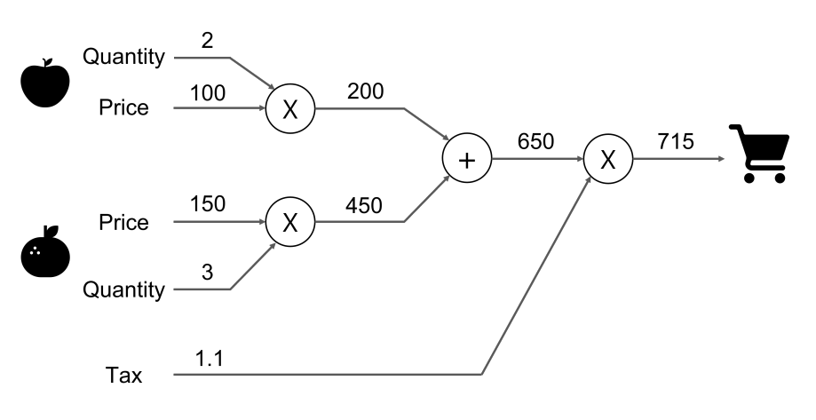
다시 그린 그림 · 누르면 원본순전파 — 왼쪽에서 오른쪽으로 값을 계산
| 노드 | 들어오는 값 | 나가는 값 |
|---|---|---|
| × (사과) | 2, 100 | 2 × 100 = 200 |
| × (귤) | 150, 3 | 150 × 3 = 450 |
| + | 200, 450 | 650 |
| × (소비세) | 650, 1.1 | 650 × 1.1 = 715 |
(2 × 100 + 150 × 3) × 1.1 = 650 × 1.1 = 715
이렇게 계산 그래프의 출발점(왼쪽)에서 종착점(오른쪽)으로 값을 계산해 나가는 것을 순전파forward propagation라고 합니다. 반대 방향(오른쪽 → 왼쪽)이 역전파backward propagation입니다(→ 03) (보충: 2쪽에는 용어가 없고, 4쪽 그림부터 두 방향이 함께 나옴).
Python 검산: 200, 450, 650, 715.
식 한 줄로 쓸 수 있는 계산을 굳이 그래프로 그리는 이유는 03에서 나옵니다. 그래프로 그려 두면 미분을 노드 단위로 나눠서 구할 수 있습니다. 신경망의 손실 계산도 이렇게 노드를 이어 붙인 그래프입니다.
- 계산 그래프에서 노드는 값, 에지는 연산이다 → X (노드 = 연산, 에지 = 값이 흐르는 길)
- 순전파는 오른쪽에서 왼쪽으로 계산한다 → X (왼쪽 → 오른쪽)
국소적 계산 Local Computation
| The key feature of a computation graph is that it obtains the final result by propagating local computations. | 계산 그래프의 핵심 특징은 국소적 계산을 전파해서 최종 결과를 얻는다는 것입니다. |
| Local means "within a small scope directly related to itself." | 국소적local = "자신과 직접 관계된 작은 범위 안에서"라는 뜻입니다. |
| Each node produces an output only based on the information directly connected to it, regardless of what happens in the rest of the graph. | 각 노드는 그래프의 나머지 부분에서 무슨 일이 일어나는지와 관계없이, 자기와 직접 연결된 정보만으로 출력을 냅니다. |
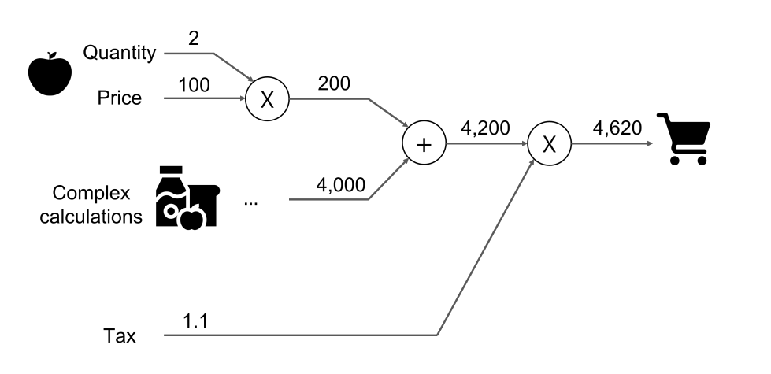
다시 그린 그림 · 누르면 원본그림 읽기 (예: 여러 물건을 살 때 총액 계산): 사과 부분은 2쪽과 같이 200입니다. 아래쪽 귤 자리는 왼쪽의 "Complex calculations"(여러 식료품 그림)와 "…"로 바뀌었고, 그 결과 4,000만 + 노드로 들어갑니다. + 노드 출력 4,200, 소비세 1.1을 곱해 4,620입니다. 교안은 본문의 "local"에 밑줄을 쳤습니다.
+ 노드는 4,000이 어떻게 나왔는지 몰라도 됩니다
"Complex calculations" 안에서 물건 몇 개를 어떤 값으로 계산했든, + 노드가 하는 일은 들어온 두 값 200과 4,000을 더하는 것뿐입니다.
| 노드 | 아는 것 | 하는 일 |
|---|---|---|
| + | 200, 4,000 | 200 + 4,000 = 4,200 |
| × (소비세) | 4,200, 1.1 | 4,200 × 1.1 = 4,620 |
Python 검산: 4,200, 4,620. 어느 노드도 그래프 전체를 보지 않습니다.
전체 계산이 아무리 복잡해도 노드 하나하나는 단순한 계산(더하기, 곱하기)만 합니다. 그래서 복잡한 계산을 단순한 노드로 나눠 생각할 수 있습니다.
역전파도 같습니다. 각 노드는 자기 계산의 미분(국소적 미분)만 알면 되고, 그 결과를 이어 전하면 전체 미분이 나옵니다(→ 05–06).
- 각 노드는 그래프 전체의 정보를 이용해 출력을 낸다 → X (직접 연결된 정보만)
- 국소적 계산이란 계산 결과가 근삿값이라는 뜻이다 → X (자기와 직접 관계된 범위의 계산)
역전파로 미분 구하기 Backpropagation
| A computation graph allows efficient computation of derivatives through backpropagation. | 계산 그래프를 쓰면 역전파backpropagation로 미분을 효율적으로 계산할 수 있습니다. |
| How does the total payment change as the price of apples changes? → The derivative of the payment amount (L) with respect to the apple price (x), ∂L∂x. | 예: 사과 가격이 바뀌면 지불 금액은 어떻게 변할까? → 지불 금액 L을 사과 가격 x로 미분한 값 ∂L∂x입니다. |
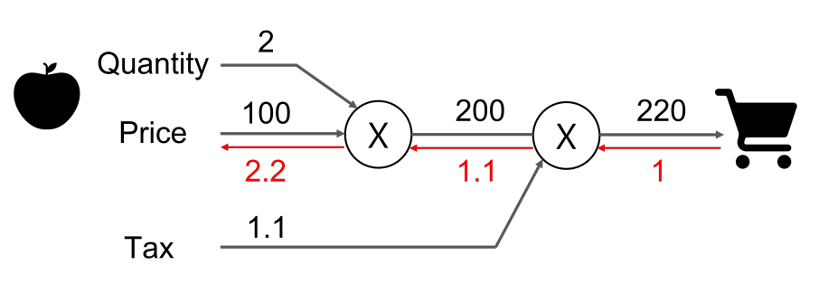
다시 그린 그림 · 누르면 원본그림 읽기 (Example: the propagation of derivative values through backpropagation): 사과 2개, 소비세만 있는 그래프입니다. 회색 화살표·선 위 검은 숫자 = 순전파(왼쪽 → 오른쪽), 빨간 화살표·선 아래 빨간 숫자 = 역전파(오른쪽 → 왼쪽).
| 에지 | 순전파 | 역전파 |
|---|---|---|
| Price → 첫 × | 100 | 2.2 |
| 첫 × → 둘째 × | 200 | 1.1 |
| 둘째 × → 장바구니 | 220 | 1 |
빨간 값 1 → 1.1 → 2.2를 따라가기
- 오른쪽 끝에서 1로 시작합니다. ∂L∂L = 1 (L을 L로 미분하면 1) (보충).
- 둘째 × 노드(200 × 1.1)를 지나면 1 × 1.1 = 1.1. 200 쪽으로 가는 값에는 상대편 입력 1.1을 곱합니다.
- 첫 × 노드(100 × 2)를 지나면 1.1 × 2 = 2.2. 사과 가격 쪽에는 상대편 입력인 개수 2를 곱합니다.
곱셈 노드에서 "상대편 입력을 곱한다"는 규칙은 06에서 정리합니다. 결과 ∂L∂x = 2.2입니다.
사과 개수: 1.1 × 100 = 110 · 소비세: 1 × 200 = 200. 수치 미분으로도 2.2, 110, 200이 나옵니다.
사과 가격이 조금 오르면 지불 금액은 그 2.2배만큼 오릅니다. 이 그래프는 L = 2.2x(일차식)라서 1원 올려도 정확히 2.2원 오릅니다: 사과 101원이면 101 × 2 × 1.1 = 222.2원 (보충, Python 검산).
"효율적"인 이유 (보충): 역전파 한 번으로 가격·개수·소비세의 미분이 함께 나옵니다. 수치 미분(P2 11)은 입력마다 값을 바꿔 가며 따로 계산해야 합니다.
- 역전파는 왼쪽에서 오른쪽으로 미분을 전한다 → X
- 역전파는 출력 쪽에서 0으로 시작한다 → X (1)
- ∂L∂x = 2.2는 사과 가격이 2.2배가 된다는 뜻이다 → X (지불 금액의 변화가 사과 가격 변화의 2.2배)
Part 1 정리 — 계산 그래프
- 계산 그래프 = 계산 과정을 그래프로. 노드 = 연산(×, +), 에지 = 값이 흐르는 화살표.
- 순전파: 왼쪽 → 오른쪽으로 값 계산. (2 × 100 + 150 × 3) × 1.1 = 715.
- 국소적 계산: 각 노드는 자기와 직접 연결된 정보만으로 출력. + 노드는 4,000이 어떻게 나왔는지 몰라도 4,200을 냄.
- 역전파: 오른쪽 → 왼쪽으로 미분 전달. 1에서 시작 → 1.1 → 2.2 = ∂L∂x(사과 가격). 그림에 없는 값: 사과 개수 110, 소비세 200 (보충).
- 2.2의 뜻: 사과 가격이 오르면 지불 금액은 그 2.2배만큼 오름. 역전파 한 번으로 모든 입력의 미분이 나와 효율적.
연쇄 법칙과 덧셈·곱셈 노드
연쇄 법칙 Chain Rule
| The chain rule describes the property of differentiation for a composite function (a function composed of multiple functions). | 연쇄 법칙chain rule은 합성 함수(여러 함수로 이루어진 함수)의 미분에 관한 성질입니다. |
| The derivative of a composite function can be expressed as the product of the derivatives of the functions that compose it. | 합성 함수의 미분은 그것을 이루는 각 함수의 미분의 곱으로 나타낼 수 있습니다. |
오른쪽 식 읽기: z는 x를 바로 받지 않고 t를 거칩니다(x → t → z). 그래서 "x가 z에 주는 영향" = "x가 t에 주는 영향(∂t∂x)" × "t가 z에 주는 영향(∂z∂t)"입니다. 식 (2)의 오른쪽에서 ∂t를 위아래로 지우면 ∂z∂x가 되는 꼴로 기억할 수 있습니다 (보충).
t = x + y (1)
∂z∂x = ∂z∂t ∂t∂x (2)
∂z∂t = 2t, ∂t∂x = 1 (3)
∂z∂x = ∂z∂t ∂t∂x = 2t · 1 = 2(x + y) (4) 교안 그대로: 식 번호 (1)은 t = x + y 줄에 붙어 있고 z = t2 줄에는 번호가 없습니다.
식 (1)–(4)를 한 줄씩, 그리고 값으로 확인
| 식 | 하는 일 |
|---|---|
| (1) | 합성 함수를 두 단계로 나눔: 먼저 t = x + y, 다음 z = t2 |
| (2) | 연쇄 법칙: 구하려는 ∂z∂x = 두 단계 미분의 곱 |
| (3) | 단계마다 따로 미분: t2을 t로 미분하면 2t, x + y를 x로 미분하면 1 (미리 짚을 개념 ②) |
| (4) | 곱하고 t = x + y를 다시 넣음: 2t · 1 = 2(x + y) |
핵심: 복잡한 함수를 직접 미분하지 않고, 간단한 단계로 쪼개 각 단계의 미분만 구해 곱합니다. 계산 그래프의 노드 하나 = 이 단계 하나입니다(→ 05).
| (x, y) | 식 2(x + y) | 수치 미분 |
|---|---|---|
| (1, 2) | 6 | 6.000 |
| (3, −1) | 4 | 4.000 |
| (0.5, 0.5) | 2 | 2.000 |
수치 미분은 z = (x + y)2을 y는 고정하고 x로 중앙 차분(h = 10−4, P2 12)한 값입니다.
- 합성 함수의 미분은 각 함수 미분의 합이다 → X (곱)
- 연쇄 법칙에서 ∂z∂x = ∂z∂t ÷ ∂t∂x이다 → X (곱)
연쇄 법칙을 계산 그래프로
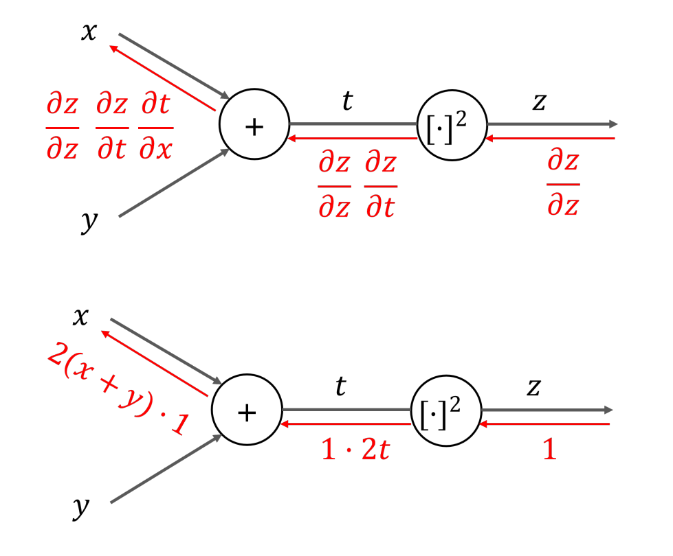
다시 그린 그림 · 누르면 원본교안 6쪽은 글 없이 그림만 있습니다. 04의 z = t2, t = x + y를 그래프로 그린 것입니다. 노드는 덧셈(+)과 제곱([·]2) 두 개. 회색 = 순전파(x, y → t → z), 빨강 = 역전파.
| 역전파 구간 | 위 그림 (기호) | 아래 그림 (값) |
|---|---|---|
| z 오른쪽 → [·]2 | ∂z∂z | 1 |
| [·]2 → + (선 t) | ∂z∂z ∂z∂t | 1 · 2t |
| + → x | ∂z∂z ∂z∂t ∂t∂x | 2(x + y) · 1 |
맨 왼쪽 값에서 ∂z∂z = 1을 빼면 04의 식 (2) ∂z∂t ∂t∂x와 같습니다. 역전파 결과 = 연쇄 법칙 결과 2(x + y).
역전파의 규칙 하나 — 들어온 값 × 국소적 미분
(왼쪽으로 보낼 값) = (오른쪽에서 들어온 값) × (그 노드의 국소적 미분)
- 상류 기울기upstream gradient: 노드의 출력 쪽(오른쪽)에서 들어오는 값 (보충 용어)
- 국소적 미분: 그 노드 하나의 출력을 입력으로 미분한 것. [·]2 노드는 2t, + 노드는 1
- 하류 기울기downstream gradient: 곱해서 입력 쪽(왼쪽)으로 보내는 값 (보충 용어)
노드는 자기의 국소적 미분만 알면 됩니다(02의 국소적 계산). 이 곱을 오른쪽 끝부터 왼쪽 끝까지 이어 가는 것이 곧 연쇄 법칙입니다.
x = 1, y = 2이면 순전파 t = 3, z = 9. 역전파: 1 → [·]2 노드에서 × 2t = × 6 → 6 → + 노드에서 × 1 → 6. 04 표의 (1, 2) → 6과 같습니다.
그림에는 y로 가는 빨간 화살표가 없습니다. 같은 규칙을 쓰면 ∂t∂y = 1이므로 y 쪽도 2(x + y) · 1입니다 (보충).
반대로 바꾸면 틀리는 문장: 역전파에서 각 노드는 들어온 값에 국소적 미분을 더해 전한다 → X (곱해)
덧셈 노드와 곱셈 노드의 역전파 Backward Propagation: Addition & Multiplication
덧셈 노드 ( + ) addition node
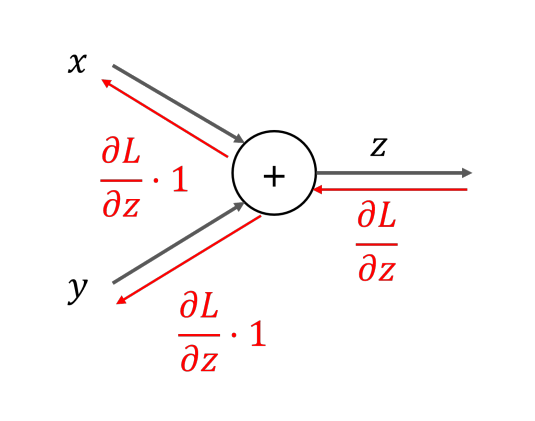
다시 그린 그림 · 누르면 원본z = x + y이면 ∂z∂x = 1, ∂z∂y = 1. 그래서 들어온 ∂L∂z에 1을 곱해 양쪽에 보냅니다 → 들어온 값을 그대로 흘려보냄.
곱셈 노드 ( × ) multiplication node
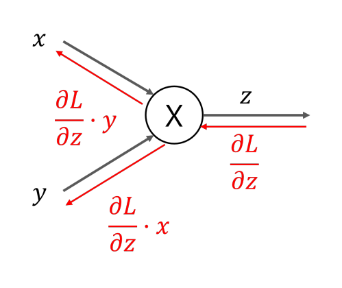
다시 그린 그림 · 누르면 원본z = xy이면 ∂z∂x = y, ∂z∂y = x. 그래서 x 쪽에는 ∂L∂z · y, y 쪽에는 ∂L∂z · x → 입력을 서로 바꿔 곱함.
두 노드를 한 표로 — 그리고 곱셈 노드가 입력을 기억하는 이유
| 노드 | 순전파 | 국소적 미분 | x 쪽으로 | y 쪽으로 |
|---|---|---|---|---|
| 덧셈 | z = x + y | 1, 1 | ∂L∂z · 1 | ∂L∂z · 1 (그대로) |
| 곱셈 | z = xy | y, x | ∂L∂z · y | ∂L∂z · x (서로 바꿈) |
역전파 때 상대편 입력값 x, y가 필요합니다. 그래서 곱셈 노드는 순전파 때 받은 x, y를 기억해 둡니다. 덧셈 노드는 1만 곱하므로 기억할 것이 없습니다.
03 다시 보기: 1 → (×1.1) → 1.1 → (×2) → 2.2. 둘 다 곱셈 노드에서 상대편 입력(1.1, 2)을 곱한 것입니다.
- 덧셈 노드는 역전파 때 들어온 값에 입력값을 곱해 보낸다 → X (그대로)
- 곱셈 노드는 x 쪽으로 ∂L∂z · x를 보낸다 → X (· y, 상대편)
- 곱셈 노드의 역전파에는 순전파 입력값이 필요 없다 → X
[연습] 사과·귤 계산 그래프의 기울기 Exercise
역전파 계산 그래프는 아주 중요하고 작년 시험에도 나왔다 — 역전파는 계산할 줄 알아야 한다. 이 연습을 답을 가리고 직접 풀어 보십시오.
Compute the gradients via backpropagation.
역전파로 기울기를 계산하시오.
그림은 2쪽과 같은 그래프이고 순전파 값만 있습니다(200, 450, 650, 715). 교안에는 답이 없습니다. 다음 장의 풀이는 06의 규칙으로 계산한 (보충)입니다.
- 오른쪽 끝에서 1로 시작
- 소비세 × 노드: 서로 바꿔 곱함 (650 ↔ 1.1)
- + 노드: 양쪽으로 그대로
- 사과 ×, 귤 × 노드: 각각 서로 바꿔 곱함
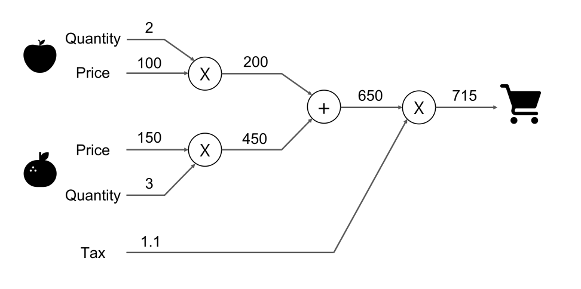
다시 그린 그림 · 누르면 원본풀이 — 그림의 에지마다 빨간 값 붙이기 (보충) Python 검산
| 에지 (변수) | 순전파 값 | 역전파 값 | 계산 |
|---|---|---|---|
| 소비세 × → 장바구니 (L) | 715 | 1 | 시작값 |
| + → 소비세 × (합계) | 650 | 1.1 | 1 × 1.1 |
| Tax | 1.1 | 650 | 1 × 650 |
| 사과 × → + (사과 합계) | 200 | 1.1 | 그대로 |
| 귤 × → + (귤 합계) | 450 | 1.1 | 그대로 |
| 사과 Price | 100 | 2.2 | 1.1 × 2 |
| 사과 Quantity | 2 | 110 | 1.1 × 100 |
| 귤 Price | 150 | 3.3 | 1.1 × 3 |
| 귤 Quantity | 3 | 165 | 1.1 × 150 |
L = (사과 Price × 사과 Quantity + 귤 Price × 귤 Quantity) × Tax를 변수마다 중앙 차분하면 2.2, 110, 3.3, 165, 650이 나와 모두 일치합니다.
사과 가격이 오르면 지불 금액은 2.2배, 귤 가격은 3.3배만큼 오릅니다. 귤 쪽이 큰 이유는 귤을 3개 사서입니다. 세율이 1.1 → 1.2로 0.1 오르면 금액은 약 650 × 0.1 = 65원 오릅니다(780 − 715 = 65) (보충).
풀이에서 볼 것 세 가지
- + 노드는 1.1을 양쪽에 똑같이 보냈습니다. 사과 합계와 귤 합계 어느 쪽이 1원 늘어도 총액은 똑같이 1.1원 늘기 때문입니다.
- × 노드는 값이 서로 바뀝니다. Price 쪽에는 Quantity(2, 3)가, Quantity 쪽에는 Price(100, 150)가 곱해집니다. 그래서 개수 쪽 기울기(110, 165)가 가격 쪽(2.2, 3.3)보다 훨씬 큽니다.
- 한 번의 역전파로 입력 5개의 기울기가 모두 나왔습니다. 수치 미분이었다면 입력마다 그래프를 두 번씩(중앙 차분) 다시 계산해야 합니다 (보충).
사과 가격·개수·소비세 자리에 가중치와 입력이, 지불 금액 자리에 손실 L이 오면 같은 방법으로 ∂L∂W가 나옵니다. Part 3–4는 신경망의 계층(ReLU, 시그모이드, Affine, Softmax-with-Loss)을 이런 노드로 다룹니다.
- 덧셈 노드는 들어온 기울기 1.1을 두 입력에 반씩(0.55) 나눠 보낸다 → X (둘 다 1.1)
- 사과 가격의 기울기는 사과 가격 100에 1.1을 곱해 110이다 → X (그건 개수의 기울기)
Part 2 정리 — 연쇄 법칙과 덧셈·곱셈 노드
- 연쇄 법칙: 합성 함수의 미분 = 각 함수 미분의 곱. z = t2, t = x + y → ∂z∂x = ∂z∂t ∂t∂x = 2t · 1 = 2(x + y).
- 계산 그래프의 역전파 = 연쇄 법칙. 1에서 시작해, 노드마다 들어온 값 × 국소적 미분을 왼쪽으로 보냄.
- 덧셈 노드: 들어온 값을 그대로(× 1) 양쪽에.
- 곱셈 노드: 입력을 서로 바꿔 곱함(x 쪽 · y, y 쪽 · x). 그래서 순전파 입력을 기억해야 함 (보충).
- 연습(보충 풀이): 합계 650 쪽 1.1, Tax 650, 사과 가격 2.2 · 개수 110, 귤 가격 3.3 · 개수 165.
활성화 함수 계층
ReLU 계층의 역전파 Backward Propagation: ReLU Activation Function
ReLU의 정의 Definition of ReLU (P1 16의 max(0, x))
y를 x로 미분 The derivative of y with respect to x
x > 0이면 y = x라서 기울기 1, x ≤ 0이면 y = 0(수평)이라서 기울기 0입니다. x = 0에서는 원래 미분할 수 없지만 교안은 x ≤ 0 쪽(0)에 넣었습니다 (보충).
그림 읽기: 위 그림(x > 0)은 들어온 빨간 ∂L∂y가 왼쪽에도 그대로 ∂L∂y로 나갑니다. 아래 그림(x ≤ 0)은 같은 값이 들어와도 왼쪽으로 0이 나갑니다. → 순전파 때 x ≤ 0이었던 자리는 역전파 신호가 0이 되어 그 앞으로 전해지지 않습니다.
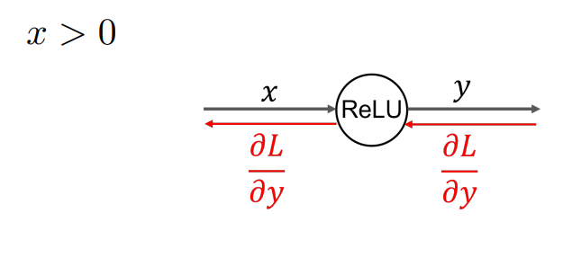
다시 그린 그림 · 누르면 원본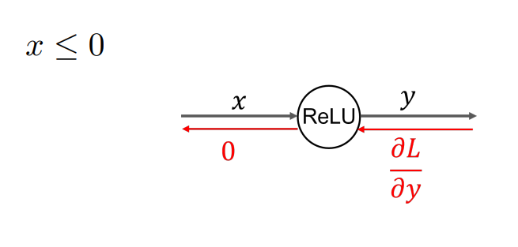
다시 그린 그림 · 누르면 원본구현: 순전파 때 x ≤ 0인 자리를 기억해 둔다 (보충, 책 기준)
역전파에서 "그대로냐 0이냐"는 순전파 때의 x로 정해집니다. 그래서 참고서의 ReLU 계층은 순전파 때 x ≤ 0인 자리를 True로 표시한 배열 mask를 저장해 두고, 역전파 때 그 자리를 0으로 만듭니다.
dout = 상류 기울기 ∂L∂y, dx = 하류 기울기 ∂L∂x. 교안에는 코드가 없습니다(참고서 『밑바닥부터 시작하는 딥러닝 1』의 구현 방식을 요약).
| 1번 | 2번 | 3번 | 4번 | |
|---|---|---|---|---|
| x | 1.0 | −0.5 | −2.0 | 3.0 |
| mask (x ≤ 0) | False | True | True | False |
| y (순전파) | 1.0 | 0 | 0 | 3.0 |
| ∂L∂y (들어옴) | 0.4 | 0.7 | −1.2 | 2.0 |
| ∂L∂x (나감) | 0.4 | 0 | 0 | 2.0 |
- x ≤ 0이면 ReLU는 상류 기울기를 그대로 보낸다 → X (0)
- x > 0이면 ReLU는 상류 기울기에 x를 곱해 보낸다 → X (1을 곱함 = 그대로)
- ReLU의 역전파는 들어온 기울기의 부호로 0인지 정한다 → X (순전파 입력 x의 부호)
시그모이드 계층 Backward Propagation: Sigmoid Activation Function
시그모이드 함수의 계산 그래프 The computational graph of sigmoid function
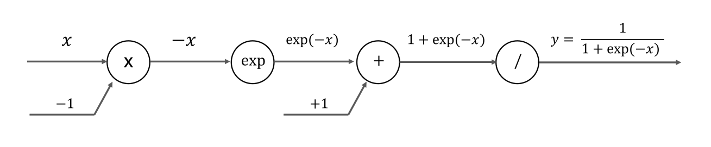
다시 그린 그림 · 누르면 원본시그모이드 함수의 정의 Definition of Sigmoid function
y = 11 + exp(−x)
그림 읽기: 식 하나를 단순한 노드 네 개로 쪼갰습니다. 회색 화살표 위의 글자가 그 에지를 흐르는 값이고, 두 노드(×, +)에는 아래쪽에서 상수(−1, +1)가 들어옵니다.
| 순서 | 노드 | 나가는 값 | 하는 일 |
|---|---|---|---|
| 1 | × (곱셈) | −x | 아래에서 온 −1을 곱해 부호를 바꿈 |
| 2 | exp | exp(−x) | e의 거듭제곱 |
| 3 | + (덧셈) | 1 + exp(−x) | 아래에서 온 +1을 더함 |
| 4 | 나눗셈(/) 노드 | y = 11 + exp(−x) | 입력 하나 u를 받아 역수 1u를 냄 |
네 노드의 국소적 미분 — 10의 준비
역전파는 노드마다 "들어온 값 × 국소적 미분"입니다(→ 05). 네 노드의 국소적 미분을 미리 구해 둡니다 (보충: 교안 10쪽에는 순전파만 있음). 나눗셈(/) 노드의 입력을 u = 1 + exp(−x)라고 하면 y = 1u입니다.
| 노드 | 국소적 미분 | 곱할 것 |
|---|---|---|
| 나눗셈(/) (y = 1u) | −1u2 = −y2 | −y2 |
| + (u = exp(−x) + 1) | 1 (덧셈 노드) | 1 (그대로) |
| exp | exp의 미분 = exp 자신 | exp(−x) |
| × (−x = x × (−1)) | 상대편 입력 −1 (곱셈 노드) | −1 |
나눗셈(/) 노드: 1u의 미분은 −1u2(미리 짚을 개념 ②). 1u = y이므로 1u2 = y2.
| x | −x | exp(−x) | 1 + exp(−x) | y |
|---|---|---|---|---|
| −2 | 2 | 7.389 | 8.389 | 0.119 |
| 0 | 0 | 1 | 2 | 0.5 |
| 1 | −1 | 0.368 | 1.368 | 0.731 |
x = 0이면 y = 0.5(P1 16과 같음). x가 클수록 exp(−x)가 작아져 y가 1에 가까워집니다.
헷갈리기 쉬운 점: 첫 노드는 "곱셈" 노드입니다. −1을 곱해 −x를 만듭니다(빼기 노드가 아님). 그래서 역전파 때 상대편 입력 −1을 곱합니다.
시그모이드 계층의 역전파 계산 그래프 Backpropagation computation graph of the sigmoid layer
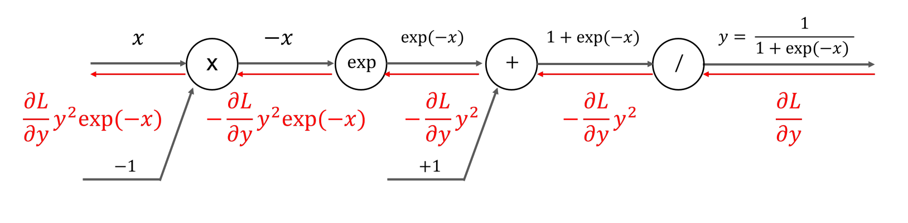
다시 그린 그림 · 누르면 원본그림 읽기: 10쪽 그래프 아래에 빨간 역전파 화살표와 값(선 아래)을 더했습니다. 오른쪽 끝의 ∂L∂y에서 시작해 오른쪽 → 왼쪽으로 읽습니다. 노드마다 곱하는 값은 다음 장의 표에 정리했습니다.
노드별로 따라가기 — 오른쪽에서 왼쪽으로
| 단계 | 지나는 노드 | 곱하는 것 | 왼쪽으로 나가는 빨간 값 |
|---|---|---|---|
| 시작 | — | — | ∂L∂y |
| 1 | 나눗셈(/) | −y2 | −∂L∂y y2 |
| 2 | + | 1 (그대로) | −∂L∂y y2 |
| 3 | exp | exp(−x) | −∂L∂y y2 exp(−x) |
| 4 | × | −1 | ∂L∂y y2 exp(−x) ← 입력 x에 대한 기울기 |
값으로 따라가기, 그리고 한 노드로 묶기
| 위치 | 곱하는 것 | 빨간 값 |
|---|---|---|
| 시작 | — | 1 |
| 나눗셈(/) 지남 | −y2 = −0.534 | −0.534 |
| + 지남 | 1 | −0.534 |
| exp 지남 | exp(−1) = 0.368 | −0.197 |
| × 지남 | −1 | 0.197 |
y = 0.731이고 y(1 − y) = 0.197, 수치 미분도 0.197입니다(→ 11). 음수 부호는 나눗셈(/) 노드에서 한 번, × 노드에서 한 번 붙어 서로 지워집니다.
교안에는 나눗셈(/) 노드의 −y2를 어떻게 얻는지 설명이 없습니다. 09의 국소적 미분 표가 그 유도입니다 (보충).
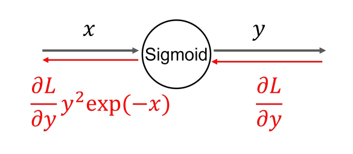
다시 그린 그림 · 누르면 원본그림 읽기: 네 노드를 Sigmoid 노드 하나로 묶었습니다. 입력 x → 출력 y, 역전파는 ∂L∂y가 들어와 ∂L∂y y2 exp(−x)가 나갑니다. 중간 값을 몰라도 이 결과만 쓰면 됩니다(02의 국소적 계산).
반대로 바꾸면 틀리는 문장: 시그모이드 역전파는 왼쪽 × 노드부터 계산한다 → X (오른쪽 나눗셈(/) 노드부터). 최종 값의 부호는 −이다 → X (−가 두 번 곱해져 +)
y(1 − y)로 정리하기
= ∂L∂y 1(1 + exp(−x))2 exp(−x) ①
= ∂L∂y 11 + exp(−x) exp(−x)1 + exp(−x) ②
= ∂L∂y y(1 − y) ③ 교안 12쪽의 식 그대로(①②③ 번호는 이 자료에서 붙임)
| 단계 | 무엇을 했나 |
|---|---|
| ① | y = 11 + exp(−x)를 넣어 y2을 x로 씀 |
| ② | 분모의 제곱을 둘로 나눠, exp(−x)를 한쪽 분자로 보냄 |
| ③ | 앞의 분수는 y. 뒤의 분수는 1 − y입니다 (보충 유도): 1 − y = 1 + exp(−x) − 11 + exp(−x) = exp(−x)1 + exp(−x) |
The backpropagation of the sigmoid layer can be computed using only the output (y) from the forward propagation.
→ 시그모이드 계층의 역전파는 순전파의 출력 y만으로 계산할 수 있습니다.
"순전파 출력 y만으로"의 뜻
역전파 때 x나 exp(−x)를 다시 계산할 필요가 없습니다. 순전파 때 구한 y를 저장해 두었다가 y(1 − y)를 곱하면 끝입니다. ReLU가 mask를 저장하듯(→ 08), 책의 Sigmoid 계층은 출력 y를 저장합니다 (보충, 책 기준). P2 코드는 방식이 조금 다릅니다(오른쪽 상자).
| x | −2 | −1 | 0 | 1 | 2 |
|---|---|---|---|---|---|
| y | 0.119 | 0.269 | 0.5 | 0.731 | 0.881 |
| y2 exp(−x) | 0.105 | 0.197 | 0.25 | 0.197 | 0.105 |
| y(1 − y) | 0.105 | 0.197 | 0.25 | 0.197 | 0.105 |
(보충) Python 검산: 두 식의 값과 수치 미분이 모두 같습니다. 국소적 미분 y(1 − y)는 x = 0(y = 0.5)에서 가장 크고(0.25), 0에서 멀어질수록 작아집니다(P2 10의 표와 같음).
P2 23의 74행 dz1 = sigmoid_grad(a1) * da1이 이 식입니다. sigmoid_grad(a1)은 σ(a1)(1 − σ(a1)) = y(1 − y)를 원소마다 계산하는 함수로 보이고(함수 본문은 교안에 없음, 책 기준), da1이 상류 기울기 ∂L∂y 자리입니다(→ 19).
P2 코드는 저장한 출력이 아니라 입력 a1을 sigmoid_grad에 넘겨 σ를 다시 계산합니다. 책의 Sigmoid 계층은 출력 y를 저장하는 것과 구현 방식이 다를 뿐, 계산하는 값 y(1 − y)는 같습니다 (보충).
P2의 변수명 주의: da1은 실제로 ∂L∂z1(시그모이드의 출력 쪽), dz1은 ∂L∂a1(입력 쪽)입니다.
- 시그모이드 계층의 역전파에는 순전파의 입력 x가 꼭 필요하다 → X (출력 y만으로)
- 시그모이드의 국소적 미분은 y(1 + y)이다 → X (y(1 − y))
- y(1 − y)는 x = 0에서 가장 작다 → X (가장 큼, 0.25)
Part 3 정리 — 활성화 함수 계층
- ReLU: 순전파 때 x > 0이었으면 상류 기울기를 그대로, x ≤ 0이었으면 0을 보냄. 구현은 x ≤ 0 자리를 mask로 저장 (보충).
- 시그모이드 y = 11 + exp(−x)는 × (−1) → exp → + 1 → 나눗셈(/), 네 노드의 계산 그래프.
- 역전파는 오른쪽부터: 나눗셈(/) −y2, + 그대로, exp × exp(−x), × (−1) → ∂L∂y y2 exp(−x). 묶으면 Sigmoid 노드 하나.
- 정리하면 ∂L∂y y(1 − y): 순전파 출력 y만으로 계산. x = 0에서 최대 0.25.
- P2 23의 sigmoid_grad(a1) * da1이 이 식. 다음 Part 4에서 Affine과 Softmax-with-Loss로 신경망 전체를 계층으로 나눕니다(→ 12–16).
Affine 계층과 Softmax-with-Loss 계층
Affine 계층 — 행렬 곱 + 편향을 한 계층으로 Affine Layer
During the forward pass of a neural network, the matrix multiplication operation corresponds to an affine transformation in geometry. Refer to the component that performs this affine transformation as the affine layer.
신경망 순전파의 행렬 곱 연산은 기하학의 아핀 변환affine transformation에 해당합니다. 이 아핀 변환을 수행하는 부분을 Affine 계층이라고 부릅니다.
Y = X · W + B
P1에서 본 a = xW + b(→ P1 18)와 같은 식입니다. 지금까지는 식으로만 썼고, 이 교안은 이것을 계산 그래프의 노드 두 개(dot, +)로 그립니다.
(보충) 기하학에서 아핀 변환 = 선형 변환(행렬 곱) + 평행 이동(편향 더하기). 교안 문장은 행렬 곱만 말하지만 그림에는 + B까지 들어 있습니다(→ 22).
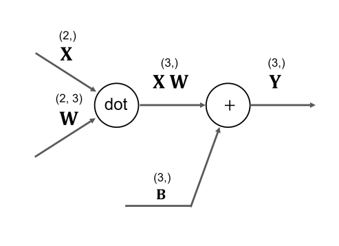
다시 그린 그림 · 누르면 원본| 그림 요소 | 뜻 |
|---|---|
| dot 노드 | 행렬 곱. 입력 X, W → 출력 XW |
| + 노드 | XW에 아래에서 들어온 편향 B를 더해 Y |
| 괄호 (2, 3) 등 | 그 값의 모양shape. (2,)는 원소 2개짜리 1차원 배열 |
Affine 계층의 역전파 — 그림 읽기
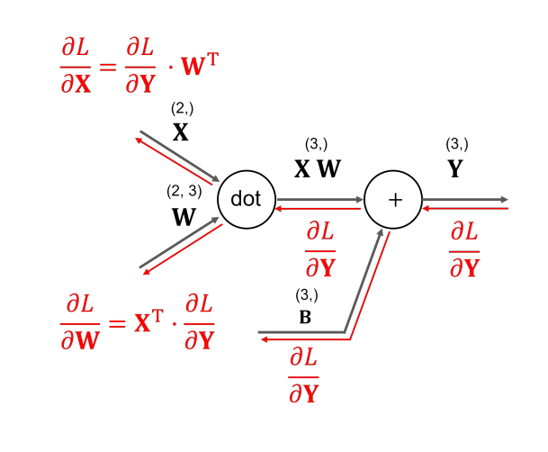
다시 그린 그림 · 누르면 원본빨간 화살표가 역전파입니다. 오른쪽 끝에서 ∂L∂Y가 들어와 오른쪽 → 왼쪽으로 흐릅니다.
| 노드 | 왼쪽으로 보내는 값 |
|---|---|
| + 노드 | 덧셈 노드는 그대로 흘려보냅니다(→ 06). dot 쪽에도, B 쪽에도 ∂L∂Y |
| dot → X | ∂L∂X = ∂L∂Y · WT |
| dot → W | ∂L∂W = XT · ∂L∂Y |
곱셈 노드는 상류 기울기에 상대편 입력을 곱해 보냈습니다(→ 06). dot 노드도 같습니다. X 쪽에는 W를, W 쪽에는 X를 곱합니다. 다만 행렬이라 전치transpose가 붙고 곱하는 순서가 정해집니다(다음 장).
왜 전치가 붙나 — 기울기는 원래 값과 모양이 같아야 함
∂L∂X는 X의 원소 하나하나에 대한 편미분을 모은 것이므로 X와 모양이 같습니다. W도 마찬가지입니다(→ P2 17). 모양만 맞춰 보면 식의 순서와 전치가 저절로 정해집니다.
| 구할 것 | 목표 모양 | 모양 계산 |
|---|---|---|
| ∂L∂X | (2,) = X | ∂L∂Y (3,) · WT (3, 2) → (2,) |
| ∂L∂W | (2, 3) = W | XT (2, 1) · ∂L∂Y (1, 3) → (2, 3) |
| ∂L∂B | (3,) = B | ∂L∂Y 그대로 (3,) |
행렬 곱 (a, b) · (b, c) → (a, c): 앞의 열 수와 뒤의 행 수가 같아야 곱할 수 있습니다. W (2, 3)를 그대로 곱하면 (3,) · (2, 3)이 되어 곱할 수 없으므로 WT (3, 2)를 씁니다.
- ∂L∂X = W · ∂L∂Y ✗ — 전치 없음, 순서 바뀜
- ∂L∂W = ∂L∂Y · XT ✗ — 결과가 (3, 2)로 W와 모양이 다름
- "∂L∂W는 WT와 모양이 같다" ✗ — W와 같음
(보충) X를 1차원 (2,)로 적으면 XT도 (2,)라 행렬 곱이 정의되지 않습니다. 위 표처럼 X를 1 × 2 행렬로 보면 XT가 2 × 1이 되어 식이 성립합니다(→ 22).
작은 수로 확인하기 (보충) 이해용 계산 · Python 검산
W =
| 1 | 2 | 3 |
| 4 | 5 | 6 |
Y = XW + B = (10, 13, 16)
뒤 계층에서 ∂L∂Y = (1, −1, 2)가 왔다고 정합니다(이해용으로 정한 값).
| 기울기 | 계산 | 값 | ||||||
|---|---|---|---|---|---|---|---|---|
| ∂L∂X | (1, −1, 2) · WT 1·1 − 1·2 + 2·3 = 5, 1·4 − 1·5 + 2·6 = 11 | (5, 11) — X처럼 2개 | ||||||
| ∂L∂W | XT(2 × 1) · (1, −1, 2)(1 × 3) 1행 = 1 × (1, −1, 2), 2행 = 2 × (1, −1, 2) |
| ||||||
| ∂L∂B | 그대로 | (1, −1, 2) |
세 결과 모두 수치 미분(중앙 차분, → P2 12)과 일치했습니다. 무작위 X(2,), W(2, 3)로도 차이가 10−12 수준이었습니다. ∂L∂W의 i행 = xi × ∂L∂Y — 입력 xi가 큰 행일수록 기울기도 큽니다.
배치용 Affine 계층 — 데이터 N개를 한꺼번에 Batch Affine
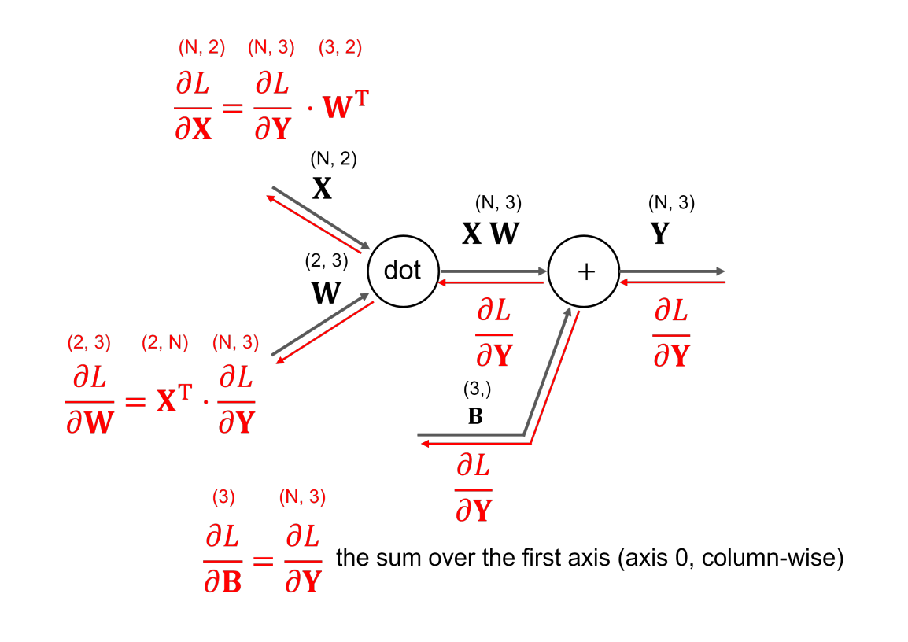
다시 그린 그림 · 누르면 원본입력이 X (2,) 하나가 아니라 N개를 쌓은 X (N, 2)입니다(P1 배치 처리, → P1 23). 빨간 식 위의 괄호가 각 항의 모양입니다.
| 식 | 모양 |
|---|---|
| ∂L∂X = ∂L∂Y · WT | (N, 3) · (3, 2) → (N, 2) = X |
| ∂L∂W = XT · ∂L∂Y | (2, N) · (N, 3) → (2, 3) = W |
| ∂L∂B | (N, 3)을 axis 0으로 합 → (3) = B |
식의 꼴은 13쪽과 같고 N만 붙었습니다. ∂L∂W는 N이 몇이든 W와 같은 (2, 3)입니다. XT · ∂L∂Y의 곱 안에서 N개 샘플의 기여가 더해지기 때문입니다 (보충).
∂L∂B = ∂L∂Y를 axis 0으로 합한 것
the sum over the first axis (axis 0, column-wise)
첫 번째 축(axis 0, 열 방향)으로 더한 것. 즉 세로로(행을 따라 내려가며) 더해 열마다 하나씩 남깁니다.
왜 더하나 (보충): 순전파에서 B (3,) 하나가 N개 행 모두에 더해졌습니다(→ P2 21의 b1처럼). B가 N개 샘플 모두에 영향을 주었으므로 N개 샘플의 기울기를 모두 더한 것이 B의 기울기입니다.
평균이 아니라 합입니다. 평균(÷ N)은 손실을 배치 평균으로 정의할 때 맨 끝의 dy = (y − t) ÷ batch_num에서 이미 처리됩니다(→ 19, P2 23).
| 1 | 2 | 3 |
| 4 | 5 | 6 |
| 7 | 8 | 9 |
| 10 | 11 | 12 |
| axis 0 (세로) 합 | (22, 26, 30) → (3,) = B의 모양 ✓ |
| axis 1 (가로) 합 | (6, 15, 24, 33) → (4,) ✗ B와 모양이 다름 |
무작위 X (4, 2), W, B로 세 기울기를 구해 모양 (4, 2) · (2, 3) · (3,)과 값을 수치 미분과 비교했습니다(차이 10−11 이하). 교안의 "(3)"은 B의 "(3,)"과 같은 모양으로 읽습니다(→ 22).
소프트맥스를 쓰는 신경망 Neural networks with softmax function
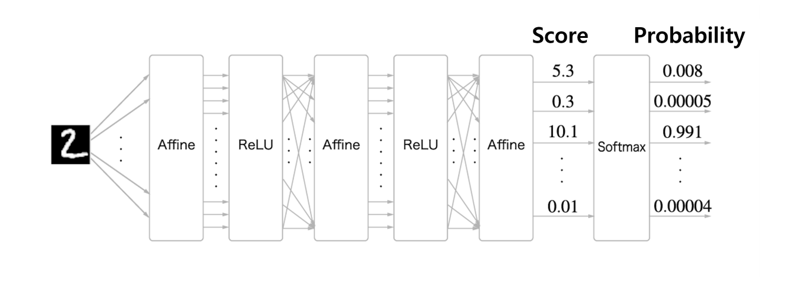
다시 그린 그림 · 누르면 원본| 그림 요소 | 뜻 |
|---|---|
| 왼쪽 "2" 이미지 | MNIST 손글씨 숫자 입력(→ P2 19) (추측) |
| 계층 순서 | Affine → ReLU → Affine → ReLU → Affine → Softmax. 계층을 차례로 이어 붙임 |
| 교차하는 화살표 | Affine 앞: 모든 입력이 모든 출력에 연결(행렬 곱) |
| Score 점수score | 마지막 Affine의 출력. 정규화 전 값이라 합이 1이 아니고 아무 실수나 될 수 있음 |
| Probability 확률probability | Softmax 출력. 0–1 사이, 합 1(→ P1 22). 가장 큰 점수 10.1 → 가장 큰 확률 0.991 |
점수와 확률 — 그림의 숫자 확인
| 칸(숫자, 추정) | 점수 | 그림의 확률 | 0.991 × e(점수 − 10.1) |
|---|---|---|---|
| 0 | 5.3 | 0.008 | 0.0082 |
| 1 | 0.3 | 0.00005 | 0.000055 |
| 2 | 10.1 | 0.991 | 0.991 (기준) |
| … | … | … | 그림에 없음 |
| 9 | 0.01 | 0.00004 | 0.000041 |
(보충, Python 계산) 소프트맥스에서 두 칸의 확률 비는 e(점수 차)입니다. 0.991을 기준으로 계산하면 보이는 값이 모두 그림과 맞습니다. 다만 3–8번 칸 점수가 그림에 없어 합이 1인지는 직접 확인할 수 없습니다(보이는 네 값의 합 0.99909, → 22).
점수 순서 10.1 > 5.3 > 0.3 > 0.01과 확률 순서 0.991 > 0.008 > 0.00005 > 0.00004가 같습니다. 소프트맥스는 큰 값을 큰 확률로 바꿀 뿐 순서를 바꾸지 않습니다(ex는 증가 함수).
그래서 추론(답만 고를 때)은 Softmax 없이 점수의 최댓값만 봐도 됩니다. 학습 때는 손실(교차 엔트로피)을 계산해야 하므로 Softmax가 필요합니다. 이 Softmax와 손실을 한 계층으로 묶은 것이 Softmax-with-Loss 계층입니다(→ 15).
이 그림의 은닉층 활성화 함수는 ReLU입니다. P2의 TwoLayerNet은 시그모이드를 썼습니다(→ 19).
Softmax-with-Loss 계층의 계산 그래프 — 순전파 Computational graph of Softmax with cross entropy loss
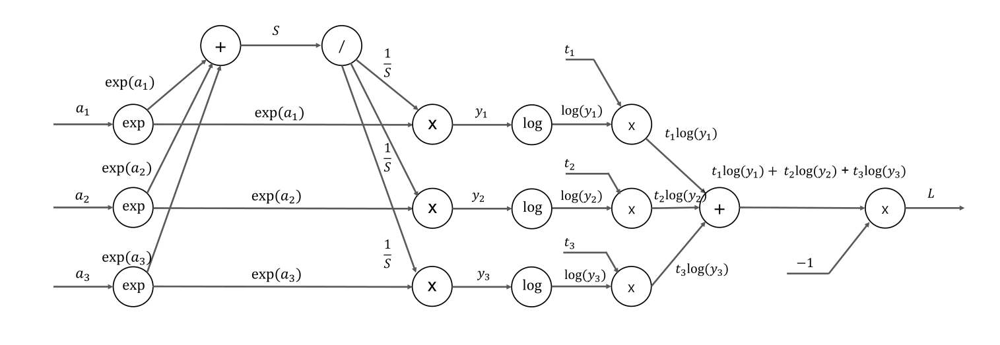
다시 그린 그림 · 누르면 원본입력은 마지막 Affine의 점수 a1, a2, a3(클래스 3개 예), 정답 레이블 t1, t2, t3이고, 출력은 손실 L 하나입니다. 왼쪽 절반이 소프트맥스, 오른쪽 절반이 교차 엔트로피 오차입니다(다음 장).
순전파를 노드별로 읽기
| 노드 | 하는 일 → 출력 | |
|---|---|---|
| ① | exp (3개) | ak → exp(ak). 출력이 두 갈래로 나뉨(+ 노드로, × 노드로) |
| ② | + | 세 exp 값을 더해 S = exp(a1) + exp(a2) + exp(a3) |
| ③ | 나눗셈(/) | 입력 하나 S를 받아 역수 1S. 이 값이 세 × 노드로 나눠 들어감 |
| ④ | × (3개) | exp(ak) × 1S = yk — 여기까지가 소프트맥스 |
| ⑤ | log (3개) | yk → log(yk) |
| ⑥ | × (3개) | 위에서 들어온 정답 tk를 곱해 tk log(yk) |
| ⑦ | + | 세 항을 더함 |
| ⑧ | × | 아래에서 들어온 −1을 곱해 L |
yk = exp(ak)S, S = ∑ exp(ai)
L = − ∑ tk log yk
위 두 식은 그래프를 식으로 정리한 것입니다 (보충, 교안에는 그래프만 있음). ①–④는 P1의 소프트맥스(→ P1 22), ⑤–⑧은 P2의 교차 엔트로피 오차(→ P2 02)와 같습니다. log는 자연로그입니다.
t가 원-핫이면(→ P2 03) 정답 칸 하나만 남아 L = −log y정답입니다.
Softmax-with-Loss 계층의 역전파 — 전체 그림
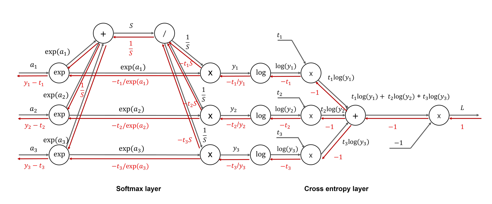
다시 그린 그림 · 누르면 원본회색 = 순전파, 빨강 = 역전파. 오른쪽 끝의 1에서 출발해 맨 왼쪽에 yk − tk가 나옵니다. 다음 두 장에서 오른쪽(Cross entropy layer)부터 차례로 따라갑니다.
① 교차 엔트로피 부분 — 오른쪽에서 왼쪽으로
| 노드 | 규칙 | 왼쪽으로 보내는 빨간 값 |
|---|---|---|
| 출발 | ∂L∂L = 1 | 1 |
| ×(−1) | 곱셈: 상대 입력 −1을 곱함(→ 06) | −1 |
| + | 덧셈: 그대로 세 갈래로 | −1, −1, −1 |
| ×(tk) | 곱셈: 상대 입력 tk를 곱함 | −tk |
| log | (log x)′ = 1x이므로 1yk을 곱함 | − tkyk |
여기까지는 덧셈·곱셈 노드 규칙과 log의 미분만으로 나옵니다.
t가 원-핫이면 정답이 아닌 칸은 tk = 0이라 기울기 0, 정답 칸만 − 1yk입니다. 손실이 정답 칸의 확률 yk에만 직접 의존하기 때문입니다. yk가 작을수록(틀릴수록) 이 값의 크기가 큽니다.
log의 미분 1x은 미리 짚은 미분 규칙입니다(→ 미리 짚을 개념).
② 소프트맥스 부분 — 두 갈래가 exp 노드에서 다시 만남
| 노드 | 계산 | 빨간 값 |
|---|---|---|
| × → exp 쪽 | 상대 입력 1S을 곱함: − tkyk × 1S, ykS = exp(ak) | − tkexp(ak) |
| × → 1S 쪽 | 상대 입력 exp(ak)를 곱함: − tkyk × exp(ak) | −tkS |
| 나눗셈(/) | 세 갈래가 모여 더함: −(t1 + t2 + t3)S = −S (원-핫이면 합 1). 역수의 미분 − 1S2을 곱함 | 1S |
| + | 덧셈: 세 exp 쪽으로 그대로 | 1S |
| exp | 두 갈래의 합 1S − tkexp(ak)에 (ex)′ = ex, 즉 exp(ak)를 곱함 | yk − tk |
∂L∂ak = ( 1S − tkexp(ak) ) exp(ak) = yk − tk
- 순전파에서 한 값이 두 갈래로 나뉘면, 역전파에서는 두 갈래의 기울기를 더합니다(exp 노드, 나눗셈(/) 노드) (보충).
- 나눗셈(/) 노드 단계에서 t1 + t2 + t3 = 1을 씁니다. 그림의 1S은 이 가정 위의 값입니다 (보충).
- (보충, Python) t의 합이 1이 아니면 결과는 yk(t1 + t2 + t3) − tk가 되어 y − t와 다릅니다.
숫자로 따라가기 (보충) 이해용 계산 · Python 검산
a = (0.3, 2.9, 4.0)
t = (0, 0, 1) — 정답은 3번째 칸
| exp(a) | (1.3499, 18.1741, 54.5982) |
| S | 74.1222 |
| y = 소프트맥스 | (0.0182, 0.2452, 0.7366) |
| L = −log 0.7366 | 0.3057 |
값은 넷째 자리 반올림.
| 노드별 빨간 값 | 3번째 칸 (t3 = 1) | 1·2번째 칸 |
|---|---|---|
| log → y 쪽: −tk ÷ yk | −1.3576 | 0 |
| × → exp 쪽: −tk ÷ exp(ak) | −0.0183 | 0 |
| × → 1S 쪽: −tkS | −74.1222 | 0 |
| 나눗셈(/) → + : 합 × (−1 ÷ S2) | 0.0135 = 1S | |
| 최종 ∂L∂a | (0.0182, 0.2452, −0.2634) | |
| y − t | (0.0182, 0.2452, −0.2634) ✓ | |
| 수치 미분 | (0.0182, 0.2452, −0.2634) ✓ 차이 10−10 수준 | |
그래프를 노드 하나씩 계산한 결과, y − t, 수치 미분 셋이 모두 같습니다.
y − t의 뜻 — 출력과 정답의 차이가 그대로 앞 계층으로
Softmax-with-Loss 계층은 역전파로 y − t (예측 − 정답)를 앞 계층(마지막 Affine)에 보냅니다. 복잡한 그래프를 지나도 결과가 이렇게 간단해집니다.
| 칸 | yk − tk의 부호 | W, b 갱신 후 ak가 움직이는 방향 (보충) |
|---|---|---|
| 정답 칸 (t = 1) | y − 1 < 0 음수 | 커짐 |
| 나머지 칸 (t = 0) | y − 0 > 0 양수 | 작아짐 |
점수 ak는 매개변수가 아니라 마지막 Affine의 출력입니다. 경사 하강법이 직접 바꾸는 것은 W, b이고(기울기가 음수면 키우고 양수면 줄임, → P2 15), 이 y − t가 앞 계층으로 전해져 W, b의 기울기가 됩니다. 그 결과 학습할수록 정답 칸의 점수가 커지는 방향으로 움직입니다 (보충).
a = (2.0, 1.0, 0.1), t = (0, 1, 0): y = (0.659, 0.2424, 0.0986), L = 1.4170
y − t = (0.659, −0.7576, 0.0986). 앞의 맞힌 예(정답 칸 −0.2634)보다 크기가 큽니다. 오차가 크면 큰 기울기가, 작으면 작은 기울기가 전해집니다.
P2 23쪽 코드 69행 dy = (y - t) / batch_num이 바로 이 결과입니다. batch_num으로 나누는 것은 손실이 배치 평균이기 때문입니다(→ P2 04). 코드 전체는 → 19.
(보충, 책 기준) 소프트맥스에 교차 엔트로피를 짝지으면 이렇게 깔끔한 y − t가 나오도록 손실이 설계되어 있습니다.
Part 4 정리 — Affine 계층과 Softmax-with-Loss 계층
- Affine 계층 = 행렬 곱 + 편향(Y = XW + B). 기하학의 아핀 변환에 해당(13쪽).
- 역전파: ∂L∂X = ∂L∂Y · WT, ∂L∂W = XT · ∂L∂Y. 전치와 순서는 "기울기 = 원래 값과 같은 모양"이 되도록 정해짐. + 노드는 그대로 흘려보냄.
- 배치(N개): X (N, 2) → ∂L∂X (N, 2), ∂L∂W (2, 3), ∂L∂B = ∂L∂Y를 axis 0으로 합(3,). B가 N개 행 모두에 더해졌기 때문(14쪽).
- 점수(score) = 마지막 Affine 출력, 확률(probability) = Softmax 출력. 순서는 같아 추론은 점수만으로 가능, 학습에는 Softmax + 손실이 필요(15쪽).
- Softmax-with-Loss 순전파: exp → 합 S → 1S → yk → log → × tk → 합 → × (−1) = L(16쪽).
- 역전파: 1 → −1 → −tk → −tk ÷ yk → (−tk ÷ exp(ak), −tkS) → 1S → yk − tk. 원-핫(t의 합 1)을 씀(17쪽).
학습 구현과 오차역전파의 장점
학습 알고리즘 구현 Implementing the Learning Algorithm
Neural network training typically consists of the following steps: 1. Mini-batch selection 2. Gradient computation 3. Parameter update 4. Iteration
P2 18쪽과 문장까지 같은 4단계입니다(→ P2 18). 달라진 것은 2단계의 방법입니다. P2에서는 수치 미분(numerical_gradient)과 오차역전파(gradient) 두 방법이 코드에 함께 있었고, 이 교안은 그중 오차역전파의 원리를 설명한 것입니다.
2단계 기울기 계산을 계층으로 보면 (보충)
P2의 2층 신경망(TwoLayerNet)을 이 교안의 계층으로 나누면 아래와 같습니다. 순전파는 왼쪽 → 오른쪽, 역전파는 같은 계층을 거꾸로 지납니다.
| Affine 1 | Sigmoid | Affine 2 | Softmax-with-Loss | |
|---|---|---|---|---|
| 순전파 → | x → a1 = xW1 + b1 | z1 = σ(a1) | a2 = z1W2 + b2 | y = softmax(a2), L |
| ← 역전파 | ∂L∂W1, ∂L∂b1 | × y(1 − y) | ∂L∂W2, ∂L∂b2, ∂L∂z1 | 시작: y − t |
| 교안 쪽 | 14쪽 | 12쪽(→ 11) | 14쪽 | 17쪽 |
각 계층은 자기 입력·출력만 보고 계산합니다(국소적 계산, → 02). 그래서 계층을 차례로 쌓아도 역전파는 계층마다 같은 규칙을 거꾸로 적용하면 됩니다.
순전파 1번으로 중간값(a1, z1 등)을 저장해 두고, 역전파 1번으로 모든 매개변수의 기울기를 한꺼번에 얻습니다. 이것이 빠른 이유입니다(→ 18).
오차역전파의 장점 Advantages of Backpropagation
| 교안 원문 | 번역 |
|---|---|
| Numerical differentiation is slow but easy to implement. | 수치 미분은 느리지만 구현이 쉽다. |
| Backpropagation is fast but more complex to implement. | 오차역전파는 빠르지만 구현이 더 복잡하다. |
| Numerical differentiation is mainly used to verify the correctness of backpropagation. | 수치 미분은 주로 오차역전파가 맞게 구현되었는지 확인하는 데 쓴다. |
| 수치 미분 | 오차역전파 | |
|---|---|---|
| 속도 | 느림 — 매개변수 하나마다 손실 2번 계산(→ P2 11·12) | 빠름 — 순전파 1번 + 역전파 1번 |
| 구현 | 쉬움 — 손실 함수만 있으면 됨 | 복잡 — 계층마다 역전파 식이 필요 |
| 값 | 근삿값(h 때문) | 해석적으로 구한 식의 값 |
| 용도 | 오차역전파 검증 | 실제 학습 |
P2 23쪽 비교표와 같은 내용입니다(→ P2 23). 784-50-10 신경망이면 수치 미분은 매개변수 39,760개 × 2 = 79,520번의 순전파가 필요합니다(→ P2 22).
기울기 확인 gradient check (보충 용어) — 두 방법으로 구해 비교
| 단계 | 하는 일 |
|---|---|
| 1 같은 조건 | 같은 매개변수, 같은 미니배치를 준비합니다. |
| 2 두 번 계산 | 수치 미분과 오차역전파로 기울기를 각각 구합니다. |
| 3 비교 | 원소마다 차이를 봅니다. 차이가 아주 작으면 역전파 구현이 맞다고 봅니다. |
(보충) 수치 미분은 구현이 단순해 틀리기 어려우므로 "기준 답"으로 씁니다. 학습 자체는 빠른 오차역전파로 합니다.
P2 gradient() 코드(→ 19)를 작은 신경망(입력 6 · 은닉 4 · 출력 3, 샘플 5개)에 넣고 수치 미분(중앙 차분, h = 10−4)과 비교:
| 기울기 | 모양 | 가장 큰 차이 |
|---|---|---|
| W1 | (6, 4) | 3.8 × 10−8 |
| b1 | (4,) | 4.7 × 10−8 |
| W2 | (4, 3) | 8.7 × 10−8 |
| b2 | (3,) | 1.4 × 10−7 |
차이가 0이 아닌 것은 수치 미분이 근삿값이고, 손실 함수의 log 안에 더한 아주 작은 값(10−7, 책 기준) 때문입니다 (보충).
무작위로 만든 값이 P2 23의 실험과 다르므로 숫자도 다릅니다(P2에서는 가장 큰 차이 4 × 10−8).
19쪽을 읽을 때 틀리기 쉬운 곳
| 맞는 문장 | 바꿔서 틀린 문장 |
|---|---|
| 수치 미분은 느리지만 구현이 쉽다. | 수치 미분은 빠르지만 구현이 복잡하다. (오차역전파와 바꿈) |
| 오차역전파는 빠르지만 구현이 복잡하다. | 오차역전파는 구현이 쉬워서 쓴다. |
| 수치 미분은 오차역전파를 검증하는 데 주로 쓴다. | 오차역전파는 수치 미분을 검증하는 데 쓴다. (주어 바꿈) |
| 실제 학습의 기울기 계산에는 오차역전파를 쓴다(P2 20쪽 35행). | 실제 학습에는 수치 미분을 쓴다(34행은 주석 처리됨). |
| 두 방법의 기울기는 거의 같다(수치 미분은 근삿값). | 두 방법의 기울기는 항상 정확히 같다. (절대 표현) |
P2 gradient() 55–66행 — forward를 계층으로 (보충)
P2 교안 23쪽 코드를 그대로 옮겼습니다(→ P2 23). P2에서는 "모양"만 봤고, 이제 각 줄이 어느 계층인지 읽을 수 있습니다.
| 행 | 계층 | 이 교안 |
|---|---|---|
| 63 | Affine 1 | 13–14쪽(→ 12, 13) |
| 64 | Sigmoid 계층 | 10–12쪽(→ 09–11) |
| 65 | Affine 2 | 13–14쪽 |
| 66 | Softmax(손실은 backward의 y − t에 들어 있음) | 16–17쪽(→ 15, 16) |
a1, z1, y를 변수로 남겨 두는 이유: backward에서 다시 쓰기 때문입니다. y는 69행 y − t에, a1은 74행 sigmoid_grad(a1)에, z1은 70행 z1.T에 다시 씁니다. 책의 Sigmoid 계층은 출력 y를 저장하지만, P2 코드는 a1에서 σ를 다시 계산합니다 (보충).
P2 gradient() 68–78행 — backward가 이 교안의 어느 쪽인가
| 행 | 교안 식 | 쪽 | 설명 |
|---|---|---|---|
| 69 | y − t | 17 | Softmax-with-Loss의 역전파. 배치 평균 손실이라 ÷ batch_num(→ 16) |
| 70 | ∂L∂W = XT · ∂L∂Y | 14 | Affine 2의 입력 X = z1, ∂L∂Y = dy |
| 71 | ∂L∂B = axis 0 합 | 14 | b2가 모든 행에 더해졌으므로 합(→ 13) |
| 73 | ∂L∂X = ∂L∂Y · WT | 14 | Affine 2를 지나 z1 쪽으로: ∂L∂z1 |
| 74 | × y(1 − y) | 12 | Sigmoid 계층. sigmoid_grad(a1) = σ(a1)(1 − σ(a1)) (보충, 책 common/functions.py 기준). 원소끼리 곱(*) |
| 75 | ∂L∂W = XT · ∂L∂Y | 14 | Affine 1의 입력 X = x |
| 76 | ∂L∂B = axis 0 합 | 14 | b1의 기울기 |
변수 이름 주의와 정리
| 변수 | 실제로 담긴 값 | 이유 |
|---|---|---|
| da1 | ∂L∂z1 | Affine 2의 입력(z1) 쪽 기울기(73행) |
| dz1 | ∂L∂a1 | Sigmoid를 거꾸로 지난 뒤의 기울기(74행) |
이름과 뜻이 서로 바뀐 것처럼 보이지만 계산 결과는 맞습니다. 교안 이름을 그대로 둡니다(→ P2 27).
- backward는 Softmax-with-Loss → Affine 2 → Sigmoid → Affine 1 순서로, forward의 정확히 반대 순서입니다.
- grads 네 개의 모양 = params 네 개의 모양. 14쪽의 모양 규칙 그대로입니다(W1 784 × 50, b1 (50,), W2 50 × 10, b2 (10,), → P2 23).
- P2에서 "다음 교안에서 다룰 것"이라고 추측했던 원리가 바로 이 교안의 12·14·17쪽입니다.
- P2 코드의 은닉층은 시그모이드, 15쪽 그림의 은닉층은 ReLU입니다. ReLU라면 74행 대신 "x > 0인 칸만 그대로, 나머지 0"(→ 08)이 들어갑니다 (보충).
Part 5 정리 — 학습 구현과 오차역전파의 장점
- 학습 4단계: 미니배치 선택 → 기울기 계산 → 매개변수 갱신 → 반복. P2 18쪽과 같고, 2단계에 오차역전파를 씀(18쪽).
- 순전파 1번 + 역전파 1번으로 모든 매개변수의 기울기를 한꺼번에 얻음. 역전파는 계층을 거꾸로 지남.
- 수치 미분: 느리지만 구현 쉬움. 오차역전파: 빠르지만 구현 복잡(19쪽).
- 수치 미분은 주로 오차역전파 구현이 맞는지 검증(기울기 확인, gradient check)하는 데 씀. 두 결과는 거의 같음(10−7 수준 차이. 수치 미분이 근삿값이고, 손실 함수의 log 안에 더한 아주 작은 값(10−7, 책 기준) 때문, 보충).
- P2 gradient(): 69행 y − t(17쪽), 70·75행 XT · ∂L∂Y(14쪽), 71·76행 axis 0 합(14쪽), 73행 ∂L∂Y · WT(14쪽), 74행 y(1 − y)(12쪽).
전체 정리 ① — 계산 그래프와 연쇄 법칙 (2–8쪽)
- 계산 그래프 = 계산 과정을 노드(연산)와 에지(값이 흐르는 선)로 나타낸 그래프. 사과 2개·귤 3개·소비세 1.1: 200 + 450 = 650 → × 1.1 = 715(01).
- 국소적 계산: 각 노드는 자기에게 직접 연결된 입력만 보고 출력을 냄. 앞의 "복잡한 계산"이 무엇이든 + 노드는 200, 4,000만 보고 4,200 → 4,620(02).
- 역전파로 미분을 구함: 순전파 100 → 200 → 220, 역전파 1 → 1.1 → 2.2 = ∂L∂x. "사과 값이 1원 오르면 총액이 2.2원 오른다"(03).
- 연쇄 법칙: 합성 함수의 미분 = 구성 함수 미분의 곱. z = t2, t = x + y → ∂z∂x = 2t · 1 = 2(x + y)(04). 계산 그래프에서는 오른쪽에서 온 값에 국소적 미분을 곱해 왼쪽으로 보냄(05).
- 덧셈 노드: 상류 값을 그대로(× 1). 곱셈 노드: 서로 바꾼 입력을 곱함 → 순전파 입력을 저장해 둬야 함(06).
- [연습](보충 풀이): 사과 가격 2.2 · 사과 개수 110 · 귤 가격 3.3 · 귤 개수 165 · 소비세 650(07).
전체 정리 ② — 활성화 함수 계층 (9–12쪽)
- ReLU: 순전파 x > 0이면 x, x ≤ 0이면 0. 역전파 x > 0이면 상류 값을 그대로, x ≤ 0이면 0(신호 차단)(08).
- 시그모이드 y = 11 + exp(−x)의 계산 그래프: × (−1) → exp → + 1 → / 의 네 노드(09).
- 역전파 단계: 나눗셈(/) 노드 × (−y2) → + 노드 그대로 → exp 노드 × exp(−x) → × 노드 × (−1) → ∂L∂y y2 exp(−x). 네 노드를 묶어 Sigmoid 노드 하나로 그림(10).
- y2 exp(−x) = y(1 − y). 시그모이드 역전파는 순전파의 출력 y만으로 계산할 수 있음. σ′(0) = 0.25, x = 1이면 y(1 − y) ≈ 0.197(11).
전체 정리 ③ — Affine · Softmax-with-Loss · 학습 (13–19쪽)
- Affine 계층 Y = XW + B(아핀 변환). ∂L∂X = ∂L∂Y · WT, ∂L∂W = XT · ∂L∂Y. 기울기는 원래 값과 모양이 같도록 전치·순서가 정해짐(12).
- 배치: X (N, 2) → ∂L∂X (N, 2), ∂L∂W (2, 3), ∂L∂B는 axis 0으로 합한 (3,)(13).
- 점수(마지막 Affine 출력) → Softmax → 확률. 10.1 → 0.991. 추론은 점수만, 학습은 Softmax + 손실(14).
- Softmax-with-Loss: 순전파 exp → S → 1S → yk → log → × tk → 합 → × (−1)(15). 역전파 결과 y − t(원-핫 t). 출력과 정답의 차이가 그대로 앞 계층으로(16).
- 학습 4단계(P2 18과 같음)의 2단계 기울기 계산에 오차역전파를 씀(17).
- 수치 미분은 느리지만 쉽고, 오차역전파는 빠르지만 복잡. 수치 미분은 오차역전파 검증(기울기 확인)에 씀(18). P2 gradient()는 y − t(17쪽), XT · ∂L∂Y와 axis 0 합(14쪽), y(1 − y)(12쪽)의 조합(19).
용어 정리 ① — 계산 그래프, 연쇄 법칙, 노드
| 계산 그래프computational graph | 계산 과정을 노드와 에지로 나타낸 그래프 |
| 노드node | 연산 하나(+, ×, exp 등). 원으로 그림 |
| 에지edge | 노드 사이의 선. 값이 흐름 |
| 국소적 계산local computation | 각 노드가 직접 연결된 정보만으로 출력을 내는 것 |
| 순전파forward propagation | 왼쪽 → 오른쪽으로 값을 계산 |
| 역전파backward propagation | 오른쪽 → 왼쪽으로 미분을 전달 |
| 오차역전파법backpropagation | 역전파로 손실의 기울기를 빠르게 구하는 방법 |
| 합성 함수composite function | 여러 함수로 이루어진 함수(z = t2, t = x + y) |
| 연쇄 법칙chain rule | 합성 함수의 미분 = 구성 함수 미분의 곱 |
| 덧셈 노드 | 역전파: 상류 값을 그대로 보냄 |
| 곱셈 노드 | 역전파: 서로 바꾼 입력을 곱해 보냄 |
| 상류 · 하류 기울기upstream · downstream | 노드로 들어오는(출력 쪽) · 나가는(입력 쪽) 기울기 (보충 용어) |
| ReLU 계층 | x > 0이면 그대로, x ≤ 0이면 0을 역전파 |
| 시그모이드 계층 | 역전파: 상류 값 × y(1 − y) |
용어 정리 ② — Affine, Softmax-with-Loss, 검증
| 아핀 변환affine transformation | 행렬 곱(+ 편향 이동). 기하학 용어 |
| Affine 계층affine layer | Y = XW + B를 수행하는 계층 |
| 전치transpose WT | 행과 열을 바꿈. (2, 3) → (3, 2) |
| 모양shape | 배열의 크기. (N, 3) = N행 3열, (3,) = 원소 3개 |
| 축axis | axis 0 = 첫 번째 축(위아래로 내려가며 세로로 합), axis 1 = 두 번째 축(가로로 합) |
| 배치batch | 데이터 N개를 묶어 한 번에 계산 |
| 점수score | Softmax 전 값(마지막 Affine 출력) |
| 확률probability | Softmax 출력. 0–1, 합 1 |
| Softmax-with-Loss 계층 | 소프트맥스 + 교차 엔트로피 오차. 역전파 결과 y − t |
| 교차 엔트로피 오차cross entropy error | L = −∑ tk log yk(→ P2 02) |
| 수치 미분numerical differentiation | 작은 h로 구한 근삿값. 느리지만 쉬움 |
| 기울기 확인gradient check (보충 용어) | 수치 미분과 오차역전파 결과를 비교해 구현을 검증 |
확인 필요 ① — 질문할 것과 안내
수업 필기는 아직 받지 못했습니다. 교수님 말씀은 하나 전달받았습니다(11.12): 역전파 계산 그래프가 아주 중요하고 작년 시험에 나왔으며, 역전파는 계산할 줄 알아야 한다. 그 밖의 중요도 구분은 교안만 보고 정한 것입니다(추측).
기존 안내는 "계산 문제 없음"이었지만, 위 말씀으로 보아 그래프에 역전파 값을 채우는 계산(4쪽 사과 예, 8쪽 연습 같은 것)은 나올 수 있다고 보고 대비합니다. 계산 범위(곱셈·덧셈 노드만인지, 시그모이드·Affine까지인지)는 아직 모릅니다.
1쪽 참고 자료 영상 3개(제목만 적음, 링크는 교안 PDF 1쪽): 경사하강법 — "AI가 궁금하다면 봐야할 기초영상 경사하강법 - DL2" · 오차역전파법(개념) — "백프로파게이션 (BackPropagation) 개념적으로 이해하기 (쉬움) - DL3" · 오차역전파법(수식) — "백프로파게이션 두번째 영상! 실제 계산은 어떻게 하는지 살펴보기 - DL4"
- 8쪽 [연습]은 문제만 있고 답이 없음 → 이 자료의 풀이(→ 07)는 06의 노드 규칙으로 구한 (보충), Python 수치 미분으로 확인
- 11쪽 나눗셈(/) 노드의 역전파 −y2(= 역수의 미분 −1x2) 유도는 교안에 없음(→ 10)
- 16쪽 yk, L의 식은 교안에 없고 그래프만 있음(→ 15)
- 17쪽 최종 식 (1S − tkexp(ak))exp(ak) = yk − tk는 그림 흐름을 정리한 것(→ 16)
- 15쪽 "추론 때는 Softmax 생략 가능"은 책 기준(→ 14)
- 9쪽 ReLU는 x = 0을 x ≤ 0 쪽에 넣어 기울기 0으로 정함. 수학적으로는 x = 0에서 미분 불가능(→ 08). P1 16의 표기(z ≥ 0이면 1)와 x = 0 처리 방식이 다름
- P2 23쪽 sigmoid_grad의 본문은 교안에 없음. σ(1 − σ)는 책 기준 가정(→ 19)
확인 필요 ② — 교안 표기·그림 주의
| 교안 | 원문 · 그림 | 읽는 법 · 근거 |
|---|---|---|
| 5쪽 | 식 번호 (1)이 t = x + y 줄에만 붙음 | z = t2 줄에는 번호가 없음. 두 줄을 함께 (1)로 읽어도 뜻은 같음 |
| 6쪽 | 역전파 빨간 화살표가 x 쪽에만 있음 | y 쪽도 같은 값 2(x + y) · 1이 흐름(덧셈 노드). 그림에서 생략된 것으로 봄 (보충) |
| 13쪽 | "matrix multiplication … corresponds to an affine transformation" | 기하학의 아핀 변환은 선형 변환 + 평행 이동. 그림의 Affine 계층도 + B까지 포함하므로 "행렬 곱 + 편향"으로 읽음 |
| 13쪽 | X (2,)에 대해 ∂L∂W = XT · ∂L∂Y | 1차원 (2,)의 전치는 그대로 (2,)라 행렬 곱이 정의되지 않음(NumPy np.dot도 오류, Python 확인). X를 1 × 2 행렬로 보면 (2, 1) · (1, 3) = (2, 3) |
| 14쪽 | ∂L∂B 위의 "(3)", B 위의 "(3,)" | 같은 모양(원소 3개)으로 읽음. 또 이 식의 "="는 같다는 뜻이 아니라 "axis 0으로 합한 것"이라는 설명이 뒤에 붙은 것 |
| 15쪽 | 확률 0.008, 0.00005, 0.991, …, 0.00004 | 보이는 값은 점수와 맞음(Python). 3–8번 칸이 생략되어 합 1은 확인 불가(보이는 합 0.99909) |
| 16–17쪽 | 나눗셈(/) 노드 | 두 수를 나누는 것이 아니라 입력 하나 S를 받아 역수 1S를 내는 노드(10–11쪽 시그모이드의 나눗셈(/) 노드와 같음, → 09) |
| 17쪽 | 나눗셈(/) 노드에서 + 노드로 가는 빨간 1S | 세 갈래 −tkS의 합 −S에 −1S2을 곱한 값. t1 + t2 + t3 = 1(원-핫)을 가정함. 화살표·글자가 촘촘해 −t1S, −t2S 위치가 선과 겹침 |
예상 문제 안내
중간고사 형식(가장 적절한 것 · 옳지 않은 것 · 모두 고르시오 · OX · 단답 · 짝짓기)으로 12문항을 만들었습니다. 계산 문제는 없을 예정이므로 뜻과 방향을 묻습니다. 오답 보기는 반대말 바꾸기, 주어 바꾸기, 절대 표현으로 만들었습니다.
Part 1–2(Q1–Q4), Part 3(Q5–Q6), Part 4(Q7–Q10), Part 5(Q11–Q12) 순서입니다.
교수님 말씀을 받지 못해 교안만 보고 만든 예상이며 실제 출제와 다를 수 있습니다. 정답 칸을 눌러야 답이 보입니다. 보기 속 수치는 Python으로 검산했습니다.
- 각 노드는 그래프 전체의 계산 결과를 알아야 자기 출력을 낼 수 있다.
- 각 노드는 자신에게 직접 연결된 정보만으로 출력을 낸다.
- 국소적 계산은 순전파에서만 성립하고 역전파에서는 성립하지 않는다.
- 앞쪽의 복잡한 계산이 바뀌면 덧셈 노드의 계산 규칙도 바뀐다.
(1) 덧셈 노드는 상류에서 온 미분값을 그대로 양쪽 입력으로 보낸다.
(2) 곱셈 노드는 상류 미분값에 자기 입력값을 곱해 같은 쪽으로 보낸다.
(3) 곱셈 노드의 역전파에는 순전파 때의 입력값이 필요하다.
(4) 역전파는 출력 쪽(오른쪽)에서 입력 쪽(왼쪽)으로 진행한다.
- 사과 가격이 조금 오르면 지불 금액은 그 2.2배만큼 오른다.
- 사과 가격이 조금 오르면 지불 금액은 그 2.2배만큼 내린다.
- 지불 금액이 1원 오르면 사과 가격이 2.2원 오른다.
- 사과를 2.2개 사면 지불 금액이 최소가 된다.
- 연쇄 법칙은 합성 함수(composite function)의 미분에 대한 성질이다.
- 합성 함수의 미분은 구성하는 함수들의 미분의 합으로 나타낼 수 있다.
- ∂z∂x = ∂z∂t ∂t∂x = 2t · 1 = 2(x + y)이다.
- 계산 그래프의 역전파는 오른쪽에서 온 값에 각 노드의 국소적 미분을 곱해 전달하는 것으로 연쇄 법칙을 계산한다.
(1) 순전파 입력 x가 0보다 크면 역전파에서 상류 값을 그대로 하류로 보낸다.
(2) 순전파 입력 x가 0 이하이면 역전파에서 상류 값을 그대로 보낸다.
(3) x ≤ 0일 때 ∂y∂x = 0이다.
(4) ReLU의 역전파를 하려면 순전파 때 x가 0보다 컸는지를 기억해야 한다.
- 역전파 결과는 ∂L∂y y(1 − y)로, 순전파의 출력 y만으로 계산할 수 있다.
- 역전파 결과는 ∂L∂y (1 − y)2이다.
- 시그모이드 역전파에는 반드시 입력 x의 값이 따로 필요하다.
- x = 0에서 시그모이드의 미분값은 0.5이다.
- ∂L∂X = ∂L∂Y · WT이다.
- ∂L∂W = XT · ∂L∂Y이다.
- ∂L∂W의 모양은 WT와 같은 (3, 2)이다.
- + 노드는 ∂L∂Y를 dot 노드 쪽과 B 쪽에 그대로 보낸다.
- ∂L∂X의 모양은 (N, 2)이다.
- ∂L∂W의 모양은 N에 따라 (N, 3)으로 바뀐다.
- ∂L∂B는 ∂L∂Y를 첫 번째 축(axis 0)으로 합한 것이다.
- ∂L∂B는 ∂L∂Y를 axis 1로 합한 것이다.
- 점수는 Softmax의 출력이고 합이 1이다.
- Softmax는 점수의 크기 순서를 바꿀 수 있다.
- 가장 큰 점수 10.1인 칸이 가장 큰 확률 0.991을 가진다.
- 학습할 때도 Softmax 계층은 필요 없다.
- 입력 ak에 대한 기울기는 yk − tk이다.
- 정답 칸의 기울기는 양수, 나머지 칸의 기울기는 음수이다.
- 출력과 정답의 차이가 그대로 앞 계층으로 전해진다.
- P2의 gradient() 코드에서 dy = (y - t) / batch_num이 이 결과를 쓴 것이다.
(1) Numerical differentiation is slow but easy to implement.
(2) Backpropagation is slow but easy to implement.
(3) 오차역전파는 주로 수치 미분이 맞게 구현되었는지 검증하는 데 쓴다.
(4) 수치 미분과 오차역전파로 구한 기울기를 비교하는 것을 기울기 확인(gradient check)이라고 한다.
(가) dy = (y - t) / batch_num (나) grads['W2'] = np.dot(z1.T, dy) (다) grads['b2'] = np.sum(dy, axis=0) (라) dz1 = sigmoid_grad(a1) * da1
보기: ㄱ. 시그모이드 역전파 y(1 − y) · ㄴ. Softmax-with-Loss 역전파 y − t · ㄷ. ∂L∂W = XT · ∂L∂Y · ㄹ. ∂L∂B = axis 0 합
교안에 자주 나오는 단어
| represent v. | 나타내다 — represents a computational process as a graph |
| propagate v. | 전파하다, 전달하다 — propagating local computations |
| local adj. | 국소적인 — within a small scope directly related to itself |
| scope n. | 범위 |
| regardless of | ~와 상관없이 — regardless of what happens in the rest of the graph |
| efficient adj. | 효율적인 — efficient computation of derivatives |
| derivative n. | 미분(값), 도함수 |
| with respect to | ~에 대한 — the derivative of L with respect to x |
| composite function | 합성 함수 — composed of multiple functions |
| product n. | 곱 — the product of the derivatives |
| correspond to | ~에 해당하다 — corresponds to an affine transformation |
| geometry n. | 기하학 |
| component n. | 구성 요소, 부분 — the component that performs … |
| perform v. | 수행하다 |
| axis n. | 축 — the sum over the first axis |
| column-wise adv. | 열 방향으로, 열마다 |
| score · probability | 점수 · 확률 |
| implement v. | 구현하다 — easy to implement |
| verify v. | 검증하다 — verify the correctness of backpropagation |
| correctness n. | 정확성, 올바름 |
필기 원문
"교수님이 역전파 그래프(컴피테이셔널그래프?) 그거 되게 중요하게 생각하셔. 작년엔 시험에도 냈대. 적어도 역전파는 계산할줄 알아야한다고 하시더라고."
반영: 교수님 말씀 장(오늘의 질문 다음), 07 연습, 22 확인 필요. 용어는 계산 그래프(computational graph)입니다.
그 밖의 수업 필기는 아직 받지 못했습니다. 중요도 구분은 이 말씀 외에는 교안만 보고 정한 것(추측)입니다.